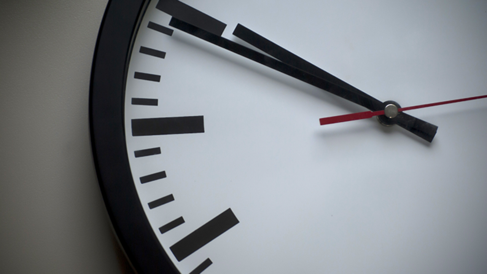

Prep Time:
15 minutes

Ingredients:
- 1 6-oz. wild salmon fillet
- cooking spray
- 1 teaspoon olive oil
- 1/8 teaspoon salt
- 1/8 teaspoon freshly ground black pepper
- 1.5 cups of thinly sliced lacinato kale
- 0.5 cup of cooked quinoa
- 1 tablespoon of All-Purpose Citrus Dressing
- 5 seedless red grapes cut in halves.
How to make the salad:
Step 1
Preheat the oven to 425°F
Step 2
Place salmon on a foil-lined baking sheet coated with cooking spray. Rub evenly with oil, salt, and pepper. Bake at 425°F for 10 minutes or until fish flakes easily when tested with a fork.
Step 3
While fish cooks, combine kale, quinoa, All-Purpose Citrus Dressing, and grapes in a bowl; toss to combine. Let stand 5 minutes. Top with salmon.